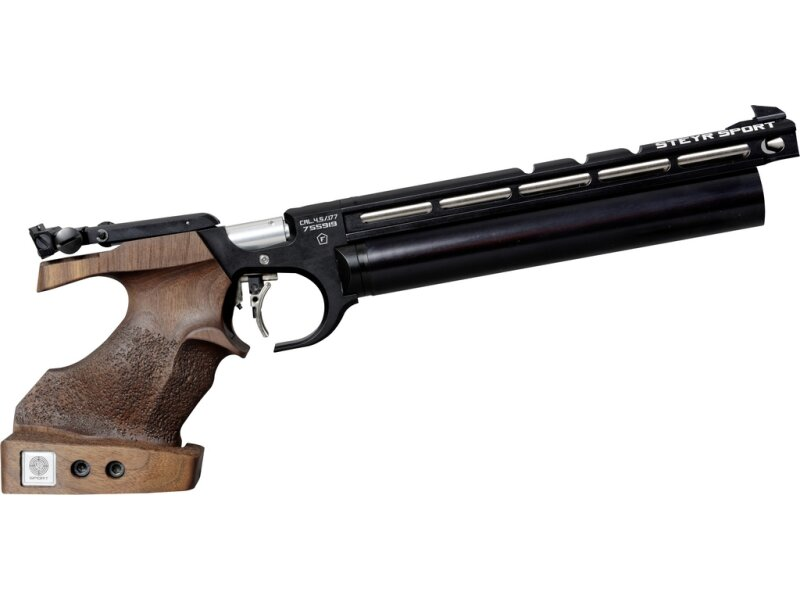

Natko Car voli pucati pištolje. Zračni pištolj je super, ali mali kalibar je još bolji.
Natko Car voli miris baruta.

| Br. Natjecanja (zp) | Br. Natjecanja (mk) | Datum | Startni Broj | Grad | Streljana | Natjecanje | Rezultat | Pištolj | (Mixed Team) | (MK - Precision) | (MK - Rapid) | (Finale) | (Medalja) |
|---|---|---|---|---|---|---|---|---|---|---|---|---|---|
| 1. | 2.11.2024. | 1438 | Zagreb | Vrapčanski Potok | II. Liga | 474 | Hammerli AP20 | - | |||||
| 2. | 9.11.2024. | Osijek | Pampas | Olimpijskih Nada | 491 | ||||||||
| 3. | 23.11.2024. | Čakovec | Dvorana | I. Liga | 515 | ||||||||
| 4. | 14.12.2024. | Osijek | 523 | ||||||||||
| 5. | 11.01.2025. | Pampas | 501 | Steyr EVO 10 | |||||||||
| 6. | 18.01.2025. | Zagreb | Vrapčanski Potok | Prvenstvo Zagreba | 536 | Srebro - tim | |||||||
| 7. | 01.02.2025. | Solin | Dvorana | Državno - Mixed Team | 521 | Lucija 266, ja 255 | - | ||||||
| 8. | Državno - Mlađi Seniori | 519 | |||||||||||
| 9. | 02.02.2025. | Državno - Seniori | 507 | ||||||||||
| 10. | 23.02.2025. | Zagreb | Vrapčanski Potok | Županijsko - Juniori | 514 | 130,9 (6.) | Zlato - tim | ||||||
| 11. | 15.03.2025. | Osijek | Pampas | Državno - Juniori | 522 | - | |||||||
| 12. | 16.03.2025. | Državno - Mlađi Juniori | 532 | Srebro - tim | |||||||||
| 1. | 27.04.2025. | Zagreb | Vrapčanski Potok | MK Turnir | 434 | Pardini SP .22LR | 241 | 193 | - |